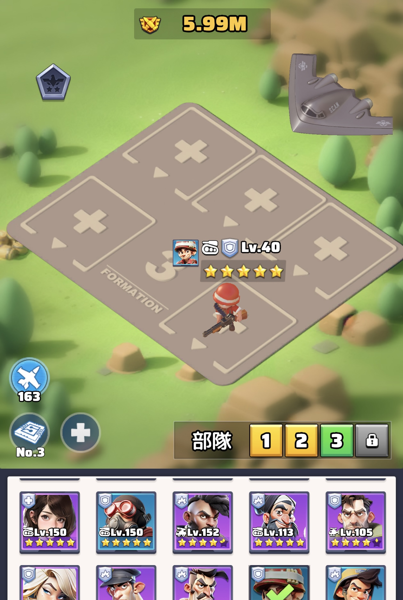
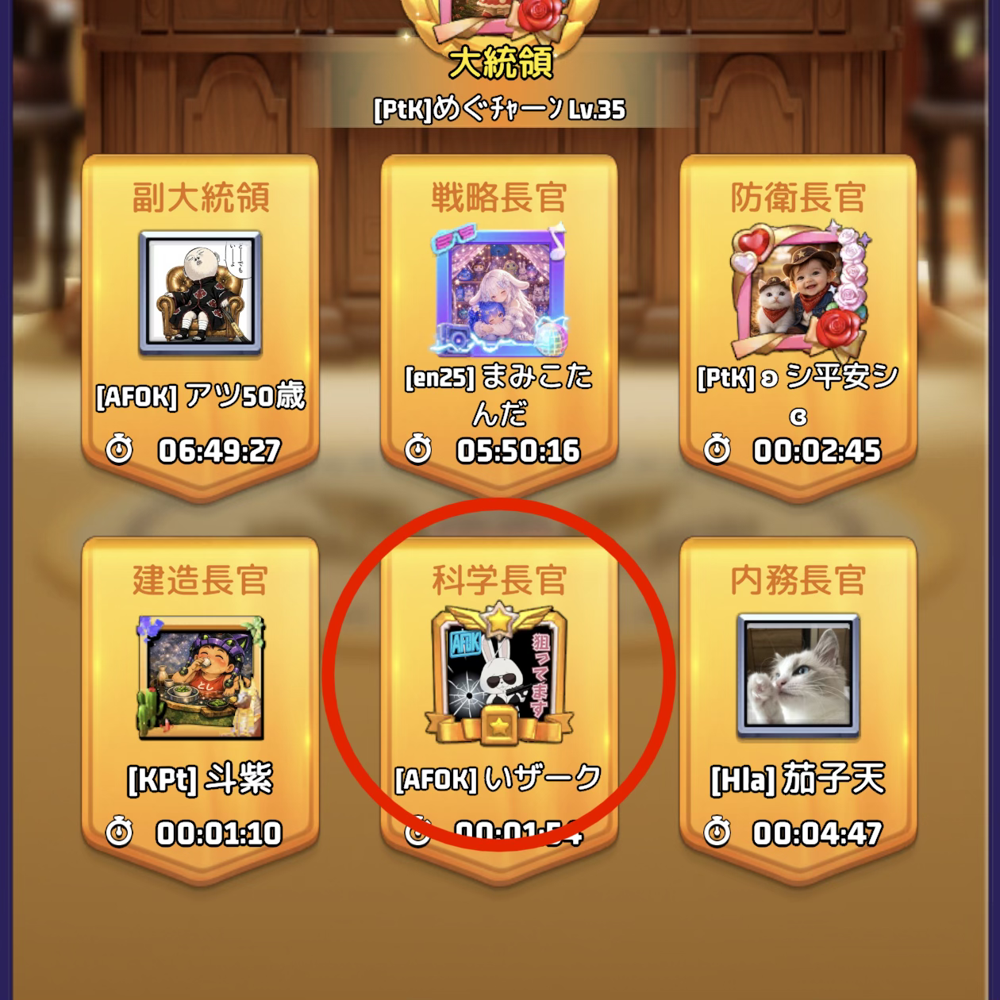
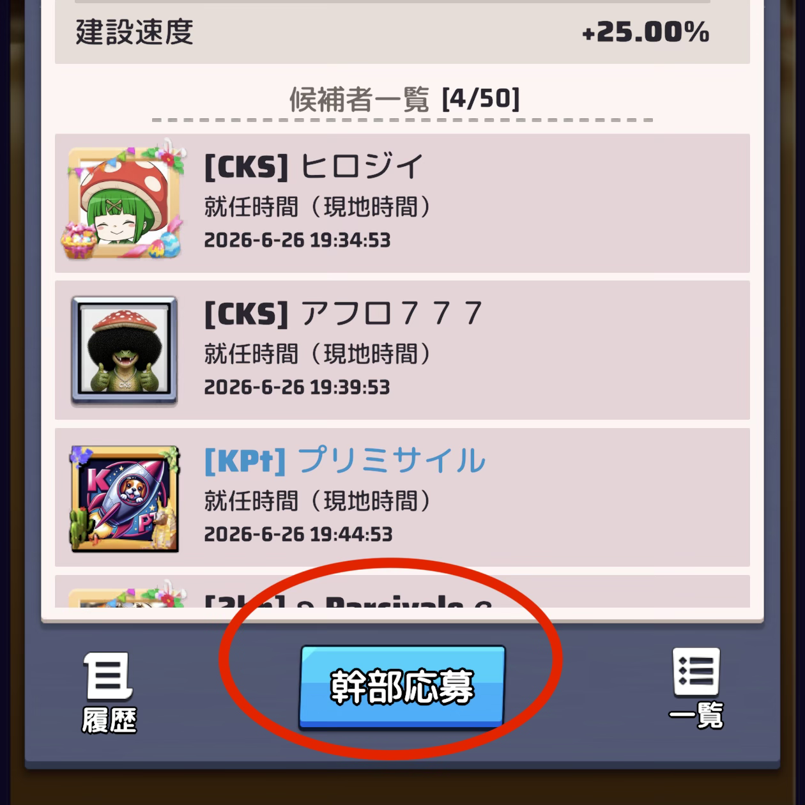
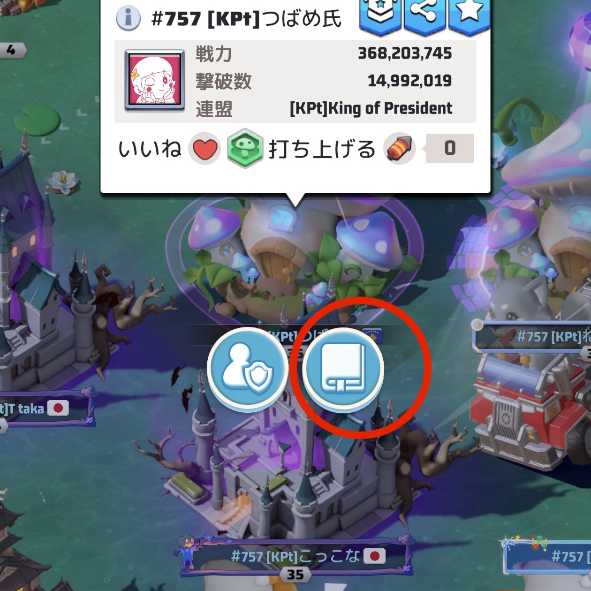

今更聞きづらい謎の用語解説
頻繁に連盟チャットで飛び交っているけれど、実は何のことかよくわかっていない、でもちょっと聞きづらい、そんな用語を解説
一人部隊
通常、部隊は5人の英雄で編成していますが、敢えて弱い英雄（ロキとか）1人だけの編成にすること。
自分ではどうやっても勝てない教官やゾンビ兄貴等の集結をかける際、5人編成だと連れて行く兵士の数が多いので必然的に死んでしまう兵士が増える。一人部隊にすることで、連れていく兵士の数を最小限にし、兵損を抑えることができる。
編成方法：部隊編成画面をタップして、入れ替えるだけ。

長官
757サーバー全員が使える各種お得効果。デメリットなし。
長官に任命された5分の間に、時間がかかる建造や科学などに取り掛かると大幅に時短が可能なので、是非活用しましょう。
「共同建造」や「共同研究」などの効果も重ねがけできるため、自分が長官になるタイミングに合わせて使うと吉。
仲間が長官に並んでいたら、任命予定時間を見て「共同～」を使ってあげると喜ばれます。
長官になる方法：この画面から



「共同～」の使い方：使いたい相手を選択


猫パンチ
シーズン中、都市や拠点の占拠に参加すると参加報酬が貰えます。
ただ、占拠できるタイミングが固定されている都合上、生活リズムによっては参加するのが難しいことがあるかと思います。
そんな時、占拠時間よりも前に一発でも拠点ボスを殴っておくと「この人は占拠に参加した」と見なされるため、拠点ボスを倒してしまわない程度に拠点ボスを軽く殴ることを「猫パンチ」と呼んでいます。
お風呂
シーズン中に拠点を占拠する際、拠点ボスを倒したあと、一定時間、連盟員が拠点に駐留することで始めて拠点占拠が完了します。
シーズン2の極寒時代に拠点が温泉だったことから「お風呂が沸きました」と呼ばれているのではないかと予想しています。
タクシー
遠くの拠点占拠や遠くでのホリホリなど、自分のいる場所から遠方に部隊を送らなければならないことが時々あって、そんなとき、目的地近くに移設した人が「タクシー」と言って集結を出してくれることがあります。
自分で目的地に直接移動するよりも、目的地付近の誰かの集結に乗った方が移動速度が圧倒的に早くなるという仕様があるため、それを「タクシー」と言います。
誰かがタクシーを出してくれたら感謝して乗りましょう、そしていつか自分でもタクシーを出してみましょう！
また、タクシーは戦闘目的ではないので、特に移動する理由がなければ集結に乗らないように注意。
タイル移動
タクシー同様、直接目的地に向かうよりもタイル（＝農地や鉄鉱採掘場などの採集地点）に向かう方が移動速度が早いです。
目的地付近のタイルを経由して向かうと通常移動よりも、ちょっとお得です。
タクシーよりは遅いですが、タクシーの募集がないときには活用しましょう。
隕鉄
クソゲー